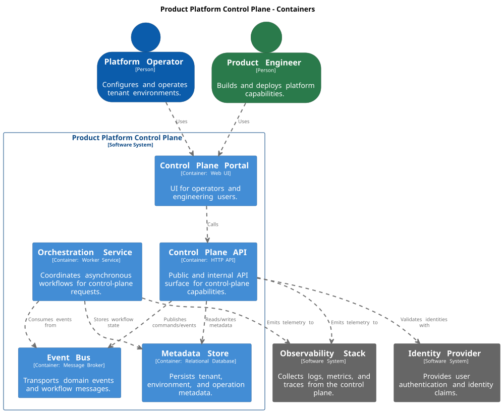
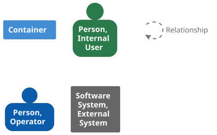

Product Platform architecture documentation with arc42, C4 model, and documentation as code.
1. Introduction and Goals
The goal is to establish a scalable product platform that provides a shared foundation for product capabilities while separating platform management concerns from product-facing functionality.
1.1. Requirements Overview
1.1.1. Platform Structure
The platform is expected to consist of two main parts:
-
a control plane
-
an application plane
The separation between control plane and application plane is a fundamental architectural decision that enables independent evolution, scalability, and clear ownership boundaries.
Control Plane
The control plane will provide the central capabilities needed to manage, configure, govern, and operate the platform. This includes responsibilities such as administration, account, workspace and environment lifecycle management, configuration, access control, operational visibility, and other shared platform management capabilities.
Application Plane
The application plane will contain the product-facing capabilities built on top of the platform. At this stage, the detailed scope of the application plane is not yet fully defined. This is intentional. The platform is being designed to support future product needs, even where all business capabilities are not yet known.
1.1.2. Key Requirement: Incremental Growth
A key requirement is that the platform must support incremental growth. It should be possible to introduce new application capabilities over time without major redesign of the underlying foundation. The architecture should therefore promote clear separation of responsibilities, modular design, and the ability to evolve different parts of the platform independently.
1.1.3. Business Objectives
From a business perspective, the platform should help the organization:
-
reduce repeated work across products and teams
-
improve consistency in how products are built and operated
-
shorten the time from idea to delivered capability
-
provide a stronger foundation for future growth
-
support governance, security, and operational control in a consistent way
1.1.4. Flexibility and Long-Term Evolution
The most important expectation is not to fully define every future application capability from the start, but to create a platform foundation that is stable enough to support long-term use and flexible enough to accommodate change.
At this point, the control plane is better understood than the application plane. The architecture should therefore reflect both what is already known and what is expected to emerge later. The application plane should be treated as an extensible area of the platform that will be shaped further as business needs become clearer.
1.2. Quality Goals
The following quality goals describe the most important architectural characteristics of the product platform. These goals guide design decisions and ensure the platform supports long-term growth and evolution.
The primary quality goals for this platform are evolvability, modularity, scalability, security, reliability, and observability.
1.2.1. Evolvability
The platform must support continuous evolution. New capabilities should be introduced without requiring major redesign. The architecture must accommodate future application plane functionality that is not yet defined.
1.2.2. Modularity
The platform must be composed of loosely coupled components with clear boundaries. This enables independent development, deployment, and replacement of capabilities across both the control plane and application plane.
1.2.3. Scalability
The platform must support growth in accounts, users, workspaces, environments, and application capabilities. The control plane and application plane should scale independently to handle increasing demand.
1.2.4. Security
The platform must enforce consistent security controls, including access management, isolation between accounts, and protection of sensitive data. Security must be applied uniformly across both planes.
2. Introduction and Goals
The goal is to establish a scalable product platform that provides a shared foundation for product capabilities while separating platform management concerns from product-facing functionality. This enables incremental delivery of future products and supports long-term evolution.
2.1. Requirements Overview
2.1.1. Platform Structure
The platform is expected to consist of two main parts:
-
a control plane
-
an application plane
The separation between control plane and application plane is a fundamental architectural decision that enables independent evolution, scalability, and clear ownership boundaries.
Control Plane
The control plane will provide the central capabilities needed to manage, configure, govern, and operate the platform. This includes responsibilities such as administration, account, workspace and environment lifecycle management, configuration, access control, operational visibility, and other shared platform management capabilities.
Application Plane
The application plane will contain the product-facing capabilities built on top of the platform. At this stage, the detailed scope of the application plane is not yet fully defined. This is intentional. The platform is being designed to support future product needs, even where all business capabilities are not yet known.
2.1.2. Key Requirement: Incremental Growth
A key requirement is that the platform must support incremental growth. It should be possible to introduce new application capabilities over time without major redesign of the underlying foundation. The architecture should therefore promote clear separation of responsibilities, modular design, and the ability to evolve different parts of the platform independently.
2.1.3. Business Objectives
From a business perspective, the platform should help the organization:
-
reduce repeated work across products and teams
-
improve consistency in how products are built and operated
-
shorten the time from idea to delivered capability
-
provide a stronger foundation for future growth
-
support governance, security, and operational control in a consistent way
2.1.4. Flexibility and Long-Term Evolution
The most important expectation is not to fully define every future application capability from the start, but to create a platform foundation that is stable enough to support long-term use and flexible enough to accommodate change.
At this point, the control plane is better understood than the application plane. The architecture should therefore reflect both what is already known and what is expected to emerge later. The application plane should be treated as an extensible area of the platform that will be shaped further as business needs become clearer.
2.2. Quality Goals
The following quality goals describe the most important characteristics of the product platform. These goals guide architectural decisions and help ensure the platform supports long-term business needs.
The most important quality goals for this platform are evolvability, modularity, scalability, and consistency.
2.2.1. Scalability
The platform must support growth in accounts, users, workspaces, environments, and application capabilities without requiring major redesign. Both the control plane and application plane should scale independently to handle increasing demand.
2.2.2. Modularity
The platform must allow new capabilities to be added incrementally. Components should be loosely coupled so that teams can introduce, update, or replace functionality without impacting unrelated parts of the platform.
2.2.3. Evolvability
The platform must support continuous evolution. Since the full scope of the application plane is not yet known, the architecture should enable future expansion while maintaining stability of existing capabilities.
2.2.4. Consistency
The platform should provide consistent patterns for identity, configuration, access control, observability, and operational management. This ensures that new capabilities follow the same principles and provide a unified experience.
2.2.5. Reusability
Shared capabilities should be designed for reuse across multiple products and services. This reduces duplication and speeds up delivery of new functionality.
2.2.6. Reliability
The platform must provide stable and predictable behavior for both platform management and application capabilities. Failures in one part of the system should have minimal impact on other parts.
2.2.7. Security
The platform must enforce consistent security controls, including access management, isolation between accounts, and protection of sensitive data across both planes.
2.3. Stakeholders
The following table lists the stakeholders of the product platform and what they can expect from this documentation.
| Role | Expectations |
|---|---|
Software Architects |
|
Developers |
|
Product Owners |
|
6. Building Block View
6.1. Product Platform Control Plane

Legend

<Overview Diagram>
- Motivation
-
<text explanation>
- Contained Building Blocks
-
<Description of contained building block (black boxes)>
- Important Interfaces
-
<Description of important interfaces>
8. Deployment View
Adopt architecture documentation standards and tooling
12. Standardize architecture documentation approach for the Product Platform
-
Deciders: Architecture Team
-
Date: 2026-03-29
13. Context and Problem Statement
Our architecture documentation needs to stay consistent, reviewable, and easy to evolve as the Product Platform grows. Without shared standards and tooling, documentation drifts in structure and quality and becomes difficult to maintain.
14. Decision Drivers
-
Consistent architecture structure across teams
-
Documentation-as-code workflow in the same repository as implementation artifacts
-
Ability to generate diagrams and publish documentation automatically
-
Traceable architectural decisions over time
15. Considered Options
-
Use arc42 + C4 + docToolchain + Structurizr DSL + ADR/TDR records in this repository
-
Use ad-hoc Markdown files and manually maintained images
16. Decision Outcome
Chosen option: "Use arc42 + C4 + docToolchain + Structurizr DSL + ADR/TDR records in this repository", because it provides a structured, automatable, and version-controlled documentation baseline that fits our engineering workflow.